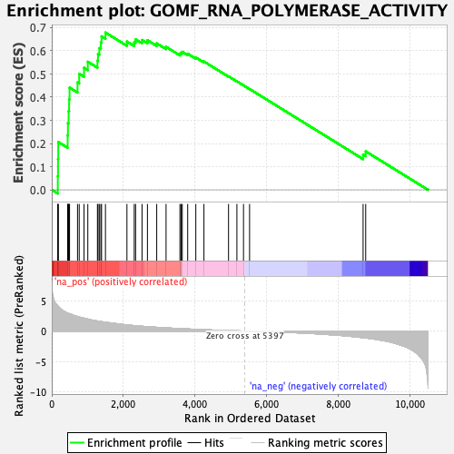
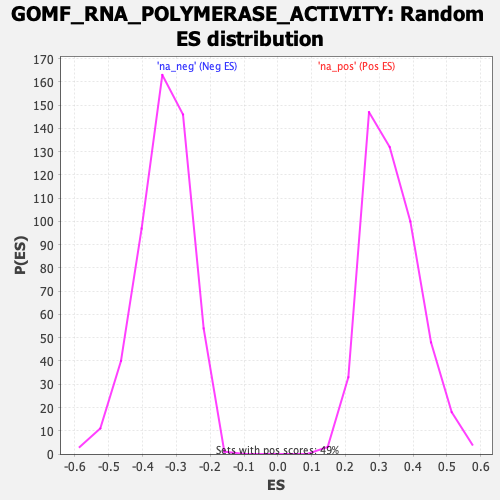

| Dataset | qlf.KOd4vsWTd4_gsea_score |
| Phenotype | NoPhenotypeAvailable |
| Upregulated in class | na_pos |
| GeneSet | GOMF_RNA_POLYMERASE_ACTIVITY |
| Enrichment Score (ES) | 0.67886126 |
| Normalized Enrichment Score (NES) | 2.023074 |
| Nominal p-value | 0.0 |
| FDR q-value | 4.2262857E-4 |
| FWER p-Value | 0.047 |

| SYMBOL | RANK IN GENE LIST | RANK METRIC SCORE | RUNNING ES | CORE ENRICHMENT | |
|---|---|---|---|---|---|
| 1 | POLR2H | 169 | 4.124 | 0.0591 | Yes |
| 2 | POLR1C | 175 | 4.084 | 0.1332 | Yes |
| 3 | POLR2E | 182 | 4.038 | 0.2063 | Yes |
| 4 | POLR2F | 444 | 2.949 | 0.2352 | Yes |
| 5 | POLR1B | 452 | 2.934 | 0.2880 | Yes |
| 6 | POLR1A | 471 | 2.905 | 0.3393 | Yes |
| 7 | POLR3D | 485 | 2.864 | 0.3903 | Yes |
| 8 | POLR1E | 497 | 2.845 | 0.4412 | Yes |
| 9 | POLR2D | 720 | 2.372 | 0.4633 | Yes |
| 10 | POLR3K | 767 | 2.299 | 0.5009 | Yes |
| 11 | POLR3E | 902 | 2.120 | 0.5267 | Yes |
| 12 | POLR3F | 1007 | 1.975 | 0.5528 | Yes |
| 13 | POLR2J | 1276 | 1.653 | 0.5574 | Yes |
| 14 | POLR3H | 1292 | 1.634 | 0.5858 | Yes |
| 15 | POLR2K | 1328 | 1.601 | 0.6117 | Yes |
| 16 | TRNT1 | 1371 | 1.564 | 0.6362 | Yes |
| 17 | POLR2L | 1391 | 1.549 | 0.6626 | Yes |
| 18 | POLR1D | 1500 | 1.454 | 0.6789 | Yes |
| 19 | MED21 | 2100 | 1.009 | 0.6401 | No |
| 20 | POLR2B | 2304 | 0.892 | 0.6370 | No |
| 21 | POLR2C | 2342 | 0.876 | 0.6494 | No |
| 22 | RMRP | 2522 | 0.789 | 0.6467 | No |
| 23 | POLRMT | 2673 | 0.731 | 0.6457 | No |
| 24 | POLR2I | 2932 | 0.618 | 0.6324 | No |
| 25 | MED20 | 3193 | 0.527 | 0.6172 | No |
| 26 | POLR2G | 3580 | 0.404 | 0.5877 | No |
| 27 | RPAP1 | 3614 | 0.394 | 0.5917 | No |
| 28 | PRIM1 | 3646 | 0.384 | 0.5958 | No |
| 29 | TERT | 3797 | 0.342 | 0.5877 | No |
| 30 | POLR3A | 4024 | 0.283 | 0.5713 | No |
| 31 | POLR2A | 4251 | 0.226 | 0.5538 | No |
| 32 | CRCP | 4938 | 0.082 | 0.4898 | No |
| 33 | POLR3G | 5172 | 0.040 | 0.4683 | No |
| 34 | POLR2M | 5356 | 0.008 | 0.4510 | No |
| 35 | POLR3B | 5526 | -0.019 | 0.4352 | No |
| 36 | POLR3C | 8697 | -1.086 | 0.1523 | No |
| 37 | PRIMPOL | 8770 | -1.127 | 0.1660 | No |
